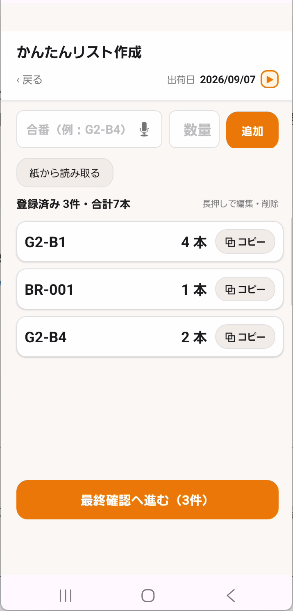

01
出荷リストを準備する
積込を始める前に、部材の「出荷リスト」を作ります。
スマホだけでも、PCのExcelからでも作成できます。
スマホで作るかんたんリスト
おすすめ-
出荷日を
決める -
合番・数量を
追加する -
出荷リストを
作成

合番は文字入力のほか、音声入力や図面撮影からも追加できます。
PCで作るExcel
出荷リストの作成
- 出荷リストExcelを選択
- 出荷データを作成
選択中のファイル： shipment_list_20260701.xlsx
クリア
Excel内容の確認
| 合番 | 数量 | 出荷日 |
|---|---|---|
| G2-B1 | 4 | 9/1 |
| BR-001 | 1 | 9/1 |
| G2-B4 | 2 | 9/1 |
Excelには「合番」「数量」「出荷日」を入力します。
出荷リストの準備完了
次は、出荷リストを選びます